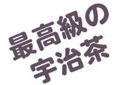

茶作り250年。宝暦8年（1758年）京都府木津川市山城町の木津川流域一帯の、豊かな風土と潤いを含んだ空気と気象条件に適した肥沃な土地で、茶栽培をしております。
山城の地で代々茶一筋に築かれてきた「尾𥔎」の自園の茶畑は、土造りからこだわり、安心・安全をモットーに丹精込めて栽培した春の一番茶のみを手摘み収穫し、自社工場で、心を込めて作っております。
甘みと旨みががたっぷり味わえる極上の日本茶「玉露」
数ある日本茶の中で極上品として知られる玉露は、覆下栽培という太陽の光を遮る特別な方法で成長した新芽から作られます。
茶摘みの約20日前ころから、直射日光を遮ることで、お茶の旨味成分であるテアニンが増え、玉露独自のまったりとした甘みのある風味が生まれます。また、高級茶玉露には旨味のもとであるアミノ酸が豊富に含まれています。
茶葉ごと飲むことができるヘルシーな「抹茶」

抹茶は玉露と同じように覆下栽培で作られた碾茶から製造されます。若芽を摘んで蒸し、揉まずに乾燥させたあと、石臼でひいて粉末にしたものが抹茶です。微粉末の状態にした茶葉が湯にとけ込み、鮮やかなうぐいす色になります。茶葉に含まれている、ビタミン、β-カロテン、植物繊維など不溶性成分まで、茶葉の栄養素をすべて無駄なく摂取できます。
お茶の成分と効能
アミノ酸 |
お茶の旨味成分、中でもテアニンが多く含まれている。脳神経の働きを活発にします。
|
|---|---|
カテキ |
渋味成分、タンニンともいわれる。殺菌作用や整腸作用があり、食中毒を防いだり、
生活習慣病予防に効果的です。
|
アミノ酸 |
お茶の旨味成分、中でもテアニンが多く含まれている。脳神経の働きを活発にします。
|
カフェイン |
利尿作用や気分をリフレッシュさせる効果があります。
|
フラボノイド |
口臭予防
|
ミネラル |
カリウム、カルシウムなどのミネラルは新陳代謝を活発に、フッ素は虫歯を予防。
|
ビタミンA |
肌に水分を与え、呼吸器や消化器官を丈夫にします。
|
ビタミンC |
疲労回復やかぜ予防のほか、肌を白くするなどの働きがあります。
|
ビタミンE |
老化予防
|
ビタミンB1 |
糖分をエネルギーに変えます。
|
ビタミンB2 |
成長を活発にします。
|